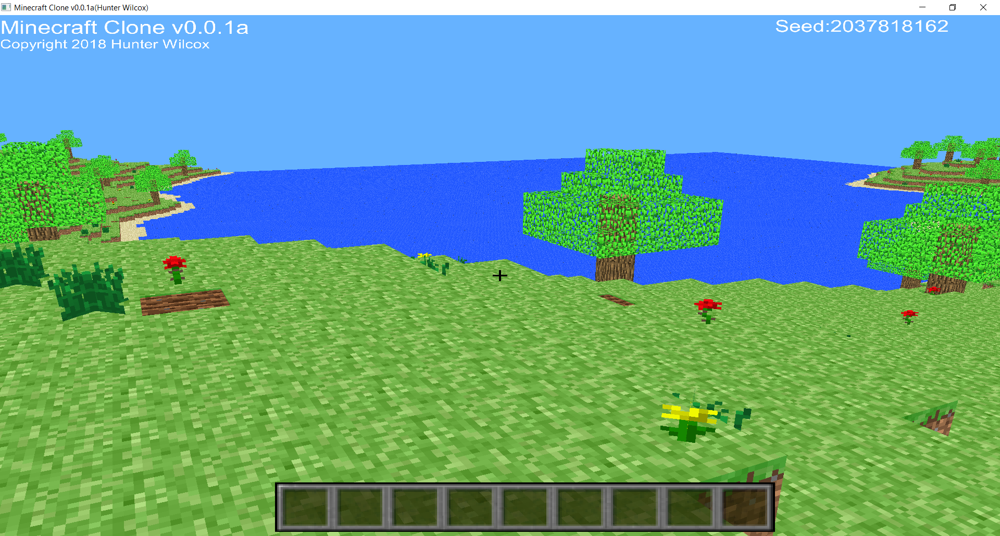

Hunter Wilcox
Recent Posts
Pages
Minecraft Clone Unity
Minecraft Clone for Unity is a re-attempt of making a Minecraft Clone. Using Unity turned out to be much easier than using OpenGL and LWJGL from the previous project. Using Unity also allows me to export to WebGL so you can play in your browser. You can play it here.
